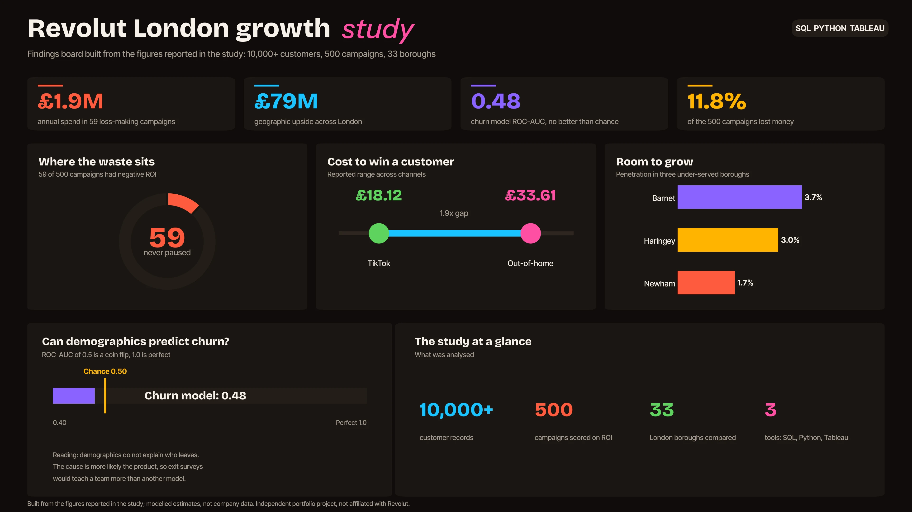
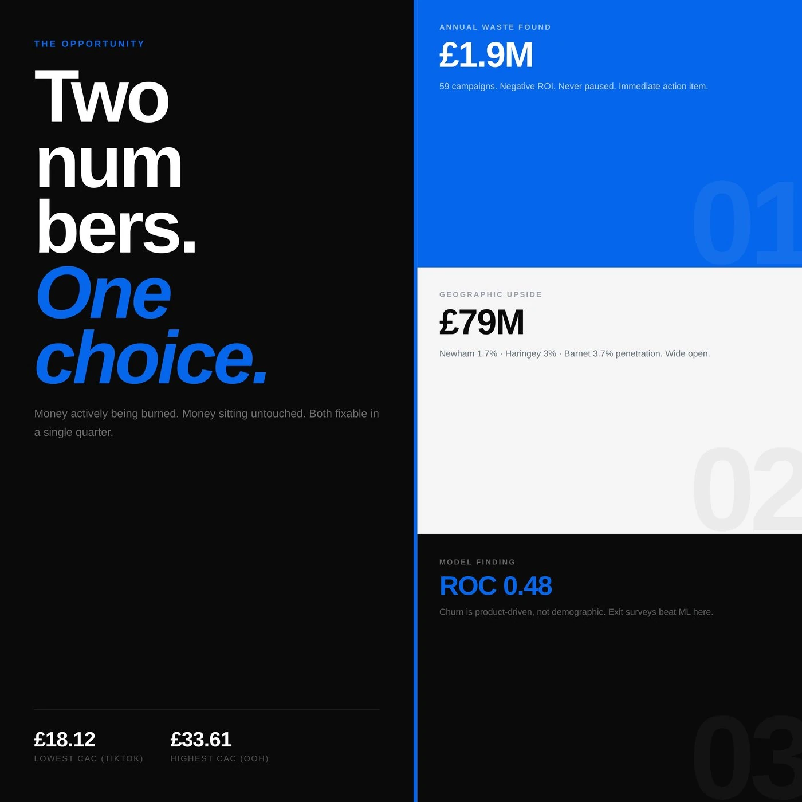

Revolut London Growth Study
Where should a fast-growing fintech spend to win more of London? I read the answer straight out of the data.

- £1.9Mannual spend in 59 loss-making campaigns
- £79Mgeographic upside across London
- 0.48churn model ROC-AUC, no demographic signal
The question
Where could a fintech like Revolut spend to grow across London? The answer was buried in messy customer and campaign data across 33 boroughs, with campaign spend and churn tangled together.
What I did
- Used SQL to pull, shape and validate data on 10,000+ customers and 500 campaigns.
- Segmented customers by value, behaviour and geography in Python.
- Worked out the return on spend for every campaign. The cost to win a customer ranged from £18.12 on TikTok to £33.61 on out-of-home.
- Tested whether churn could be predicted at all, then turned the findings into carousel visuals for LinkedIn.
What I found
- About £1.9M of annual spend sat in 59 campaigns with negative ROI that were never paused.
- A £79M geographic upside in under-penetrated boroughs, led by Newham (1.7% penetration), Haringey (3%) and Barnet (3.7%).
- The churn model scored a ROC-AUC of 0.48, which is no better than chance. I read that as useful: demographics do not explain who leaves, so the cause is more likely the product, and exit surveys would tell a team more than another model.
A note on the data
These figures describe the dataset I analysed and are modelled estimates, not any company's real performance. This is an independent portfolio project and is not affiliated with or endorsed by Revolut.
- Marketing analytics
- ROI analysis
- Geo analysis
- Churn
- Data storytelling
